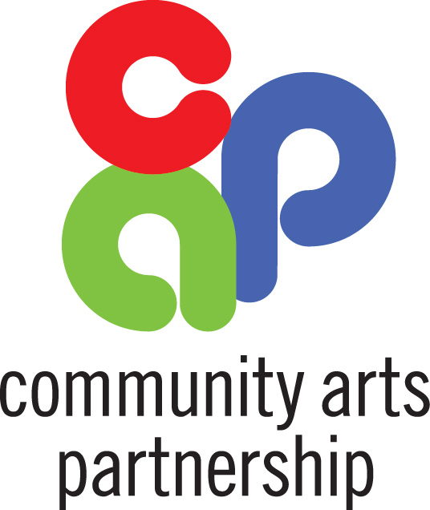

Upcoming concert
Saturday, December 8, 2012
4:00 p.m.
First Baptist Church
In Dewitt Park, Ithaca, NY
Diana Geiger, music director
James Mick, assistant conductor
Program
|
Refreshments served after the concert for all to enjoy!
There is a suggested $5 donation at the door.
Made possible with grant support from the
Community Arts Partnership and from The Service League.

Rehearsal Information
The ICO meets every Wednesday during the school year from 7:00-9:30 p.m. at the Cayuga Ridge Health and Residential Community on Route 96 near the Cayuga Medical Center in Ithaca, NY. All instrumentalists are encouraged to inquire as we have openings in winds, brass, strings and percussion. For more information, send an inquiry to the Music Director at musicdirector@ithacacommunityorchestra.org.